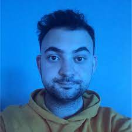

OzU Machine Learning in Finance and Bioinformatics Lab
OzU Machine Learning in Finance and Bioinformatics Lab 
People
Faculty
Associate Prof. Emre Sefer
Director of Ozu Machine Learning in Finance and Bioinformatics Lab
Personal Site Github Resume
Ph.D. Students
M.Sc. Students

Undergraduate Students
Alumni
M.Sc.
Mustafa Pala
Areas of Interest: Cryptoassets, Machine Learning, Asset Price Prediction
Personal Site

Yasin Uygun
Areas of Interest: Graphs, Graph Neural Networks, Time-series-based Prediction
Batuhan Eralp
Thesis: Joint analysis of SQTL and HI-C reveals spatial proximity between SQTL and target genes across multiple tissues
2023
Personal Site
Zehra Erva Ergun
2022
Thesis: Finsentiment: Predicting financial sentiment and risk through transfer learning
Personal Site
Ugur Dolu
2022
Thesis: A Novel Sampling Technique And Gradient Boosting Tree-based Approach for Cross-Channel Fraud Detection
Personal Site